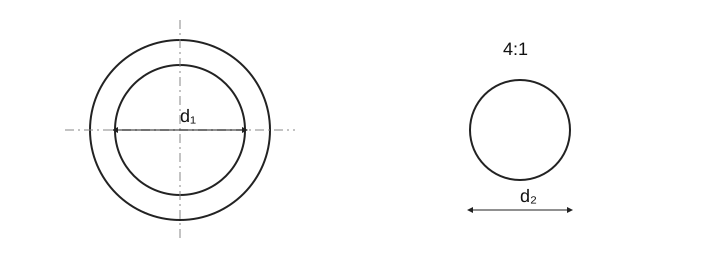

CS
EN
DE
FR
RU
УПЛОТНЕНИЯ

Собственная поясняющая схема; не нормативный производственный чертёж. Не все параметры таблицы изображены.
Уплотнительные кольца · размеры и смысл
УПЛОТНЕНИЯ
Пункт
Значение / формула
Значение
Внутренний диаметр кольца
d₁
Свободное кольцо
Диаметр сечения
d₂
Свободное кольцо
Наружный диаметр
D = d₁ + 2d₂
Идеальная круговая геометрия до сжатия